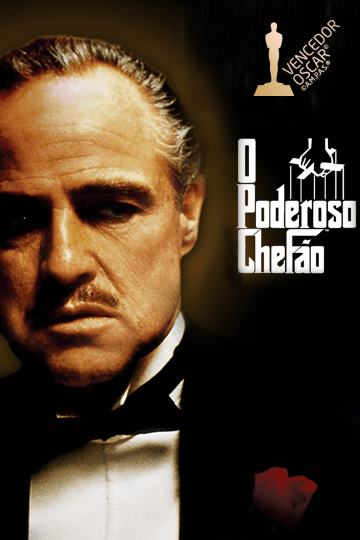

A Ascensão
A ascensão em O Poderoso Chefão é marcada pela transformação de Michael Corleone, que passa de um jovem distante dos negócios da família para um líder frio e estratégico. Após o atentado contra seu pai, ele assume responsabilidades cada vez maiores, entrando definitivamente no mundo do crime.

Conflitos
Os conflitos em O Poderoso Chefão giram principalmente em torno das disputas entre famílias mafiosas pelo controle de poder e negócios ilegais. Essas rivalidades geram traições, alianças estratégicas e confrontos violentos que colocam em risco a estabilidade da família Corleone.